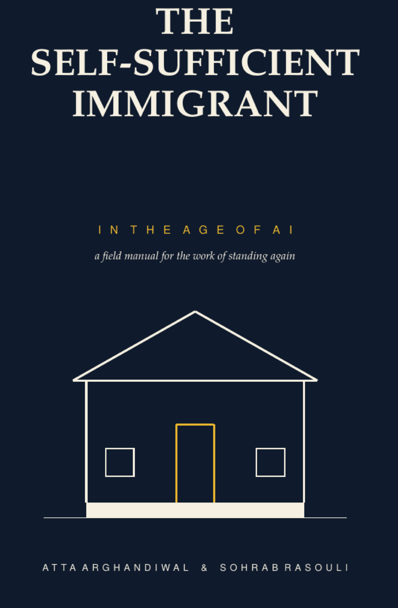
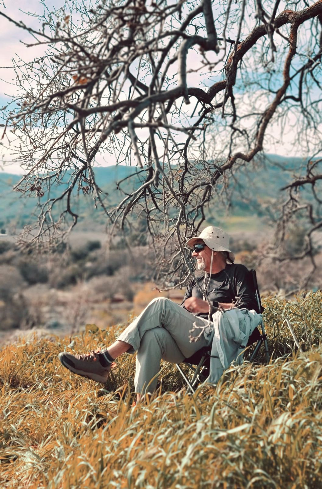
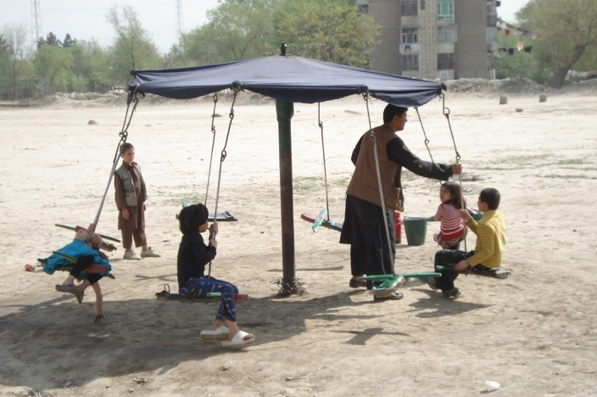
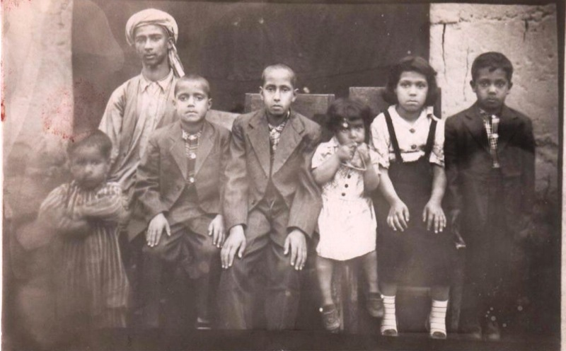
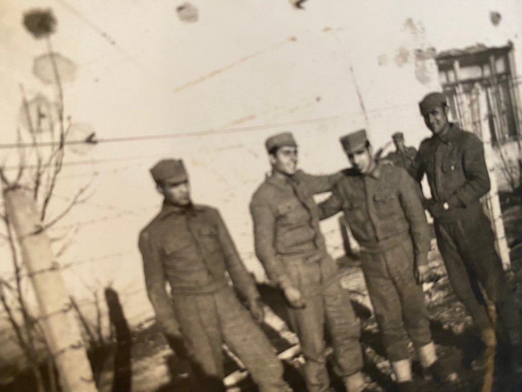
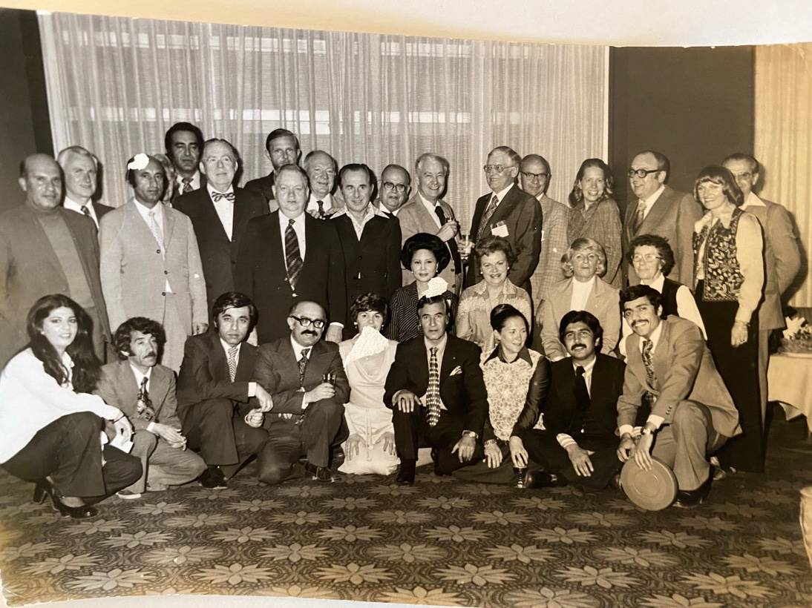
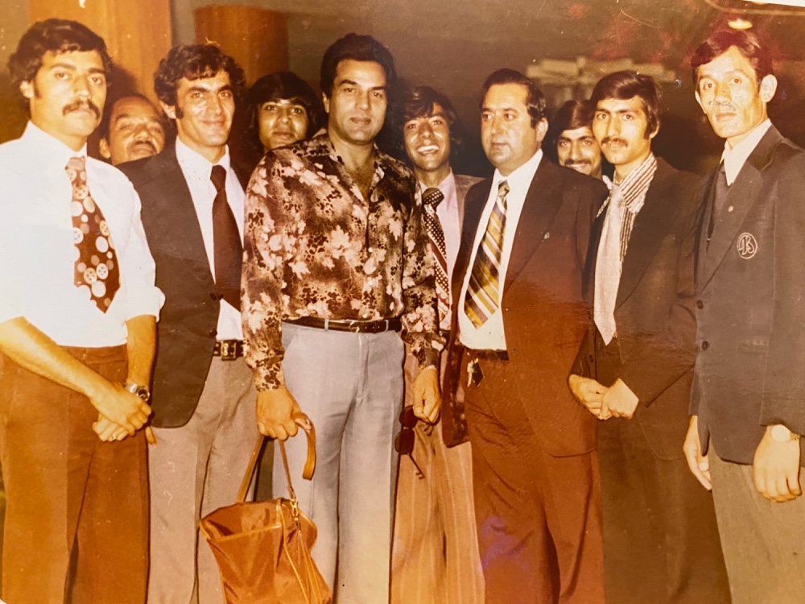
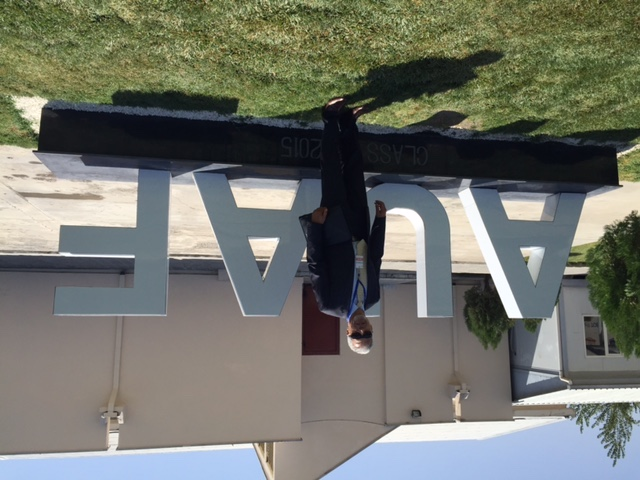
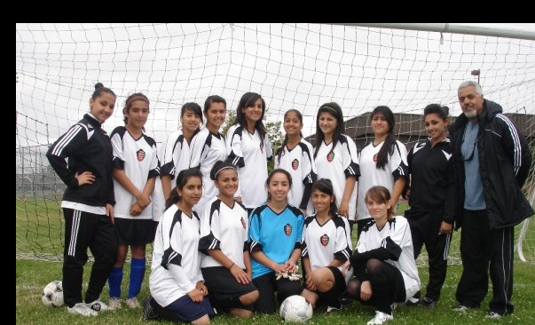

A field manual for newcomers using AI-era tools while protecting judgment, dignity, agency, and family stability.


For readers rebuilding life with dignity and self-sufficiency.
A field manual for newcomers using AI-era tools while protecting judgment, dignity, agency, and family stability.

A searing account of Afghanistan, exile, and the human dignity that survives displacement.
Atta's award-recognized memoir on memory, displacement, and the lifelong search for home.
A practical guide for families and communities starting fresh with dignity, work, citizenship, planning, and responsibility.
A structured resource for immigrant families, documents, work, citizenship, and daily stability.
Now Published
Co-authored by Atta Arghandiwal and Sohrab Rasouli, The Self-Sufficient Immigrant in the Age of AI offers practical guidance for using AI while preserving human judgment, responsibility, privacy, and dignity.
About Atta
Atta Arghandiwal is an Afghan American author, humanitarian, and mentor whose life trajectory runs from Kabul and exile to a long executive career in U.S. banking. A former Senior Vice President and author of Lost Decency, Atta challenges immigrant communities to move beyond survival toward responsibility, self-sufficiency, and dignity. His newly published Age of AI work continues that mission with practical guidance for newcomers, families, and mentors.
My Journey

A childhood image becomes part of Atta's larger work: remembering what displacement takes, honoring what dignity protects, and helping the next generation stand.

A family bound by dignity on the edge of the Oxus River. This final portrait shows Atta with his siblings before he crossed into Russian soil with his father, the Security Commander of Imam Saheb.

At 18, mandatory Air Force service shaped his understanding of accountability, structural discipline, and responsibility to protect and serve one's homeland.

In 1978, Atta worked in PR and Sales at the Hotel Inter-Continental in Kabul, welcoming American tourists from the ARAMCO group in Saudi Arabia during a globally connected era.

Welcoming Indian cinema icon Dharmendra reflected the deep admiration Afghans held for arts, music, and storytelling as a bridge between cultures.
As Director of the Stoor Club, Atta marched alongside Kabul's football team directors during the 1978 Independence Day parade, when sports and community clubs carried national pride.

Returning to Kabul in 2015, Atta visited the American University of Afghanistan and saw a reminder that the nation's resilience remains rooted in knowledge, academic excellence, and self-sufficiency.

From 2010 to 2014, coaching a young women's soccer team in Tracy became another way to teach discipline, mutual respect, responsibility, and confidence.
Stay Connected
A short, occasional note when a new book, talk, or program is ready. No spam, no membership promise.